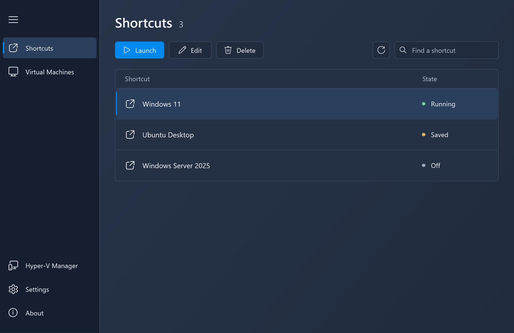

01 / ACCESS
A shortcut to every machine
Create Desktop and Start Menu shortcuts for your VMs. Launch them straight from the places you already use.
BUILT FOR WINDOWS & HYPER-V
Give your local Hyper-V machines a place on your desktop. Create shortcuts, launch from the system tray, and let Hyper-V Launcher take care of the details.
Windows x64 · Hyper-V required

LESS FRICTION. MORE CONTROL.
01 / ACCESS
Create Desktop and Start Menu shortcuts for your VMs. Launch them straight from the places you already use.
02 / LAUNCH
Open a machine from the launcher or the system tray. Your configured shortcuts are ready when you are.
03 / AUTOMATE
Choose to pause or shut down a VM when its window closes. Automatically create new shortcuts and clean up deleted machines.
A QUICK LOOK INSIDE
After installing, open Hyper-V Launcher from the Start Menu.
01 — PICK YOUR MACHINE
Open the Virtual Machines page, select a machine, and choose Create Shortcut.

02 — MAKE IT YOURS
Name your shortcut, choose Desktop or Start Menu placement, and decide what happens when the VM window closes.

03 — LAUNCH FROM THE TRAY
Your shortcuts are also available from the system tray menu.

04 — KEEP SHORTCUTS IN SYNC
Enable automatic detection in Settings to get notifications for new VMs. Deleted VMs have their shortcuts cleaned up automatically.

READY WHEN YOU ARE
Download the setup for Windows x64 with Hyper-V enabled.